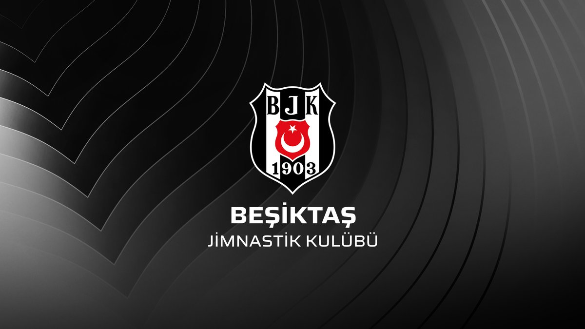

Beşiktaş Jimnastik Kulübü

"Kara Kartal" lakabıyla bilinen, Türkiye'nin en köklü spor kulüplerinden biridir.
Tarihçe
Beşiktaş Jimnastik Kulübü, 1903 yılında İstanbul’un Beşiktaş semtinde kurulmuştur ve Türkiye'nin resmî olarak tescil edilen ilk spor kulübüdür. İlk olarak jimnastik üzerine faaliyet göstermiş, daha sonra futbol başta olmak üzere birçok branşta faaliyetlerine başlamıştır.
Beşiktaş, 1959 yılında başlayan Türkiye 1. Futbol Ligi'nin (günümüzde Süper Lig) kurucu takımlarındandır. Siyah-beyaz renklere sahip olan kulüp, taraftarları arasında “Çarşı” grubu ile de tanınır.
Kulüp, futbol dışında basketbol, voleybol ve daha birçok amatör branşta da faaliyet göstermektedir. Beşiktaş, Türk sporuna önemli katkılarda bulunmuş, sayısız başarıya imza atmıştır.